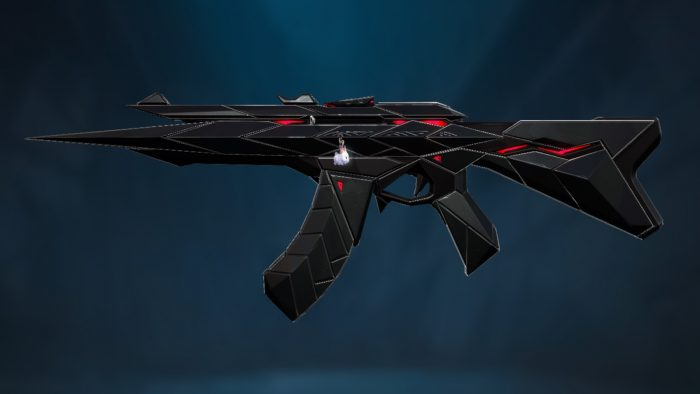

Top nice skin vandal in Valorant
About
Vandal - a powerful rifle of Valorant - possesses many of the most beautiful, "cool" skins that players can receive. With a variety of designs, from animations to super beautiful shapes, the following vandal skins have reached the top of the most beautiful Vandal skins in Valorant
1. Prime Vandal
- Price: 1775 VP
- Where to buy: Daily item shop, Night market
- Skin type: Premium
2. Reaver Vandal
- Price: 1775 Vp
- Where to buy: Daily item shop, Night market
- Skin type: Premium
3. Gaia’s Vengeance Vandal
- Price: 1775 VP
- Where to buy: Daily item shop, Night market
- Skin type: Premium
4. Araxys Vandal
- Price: 2175 VP
- Where to buy: Daily item shop
- Skin type: Exclusive
5. Prelude to Chaos Vandal
- Price: 2175VP
- Where to buy: Daily item shop
- Skin type: Exclusive